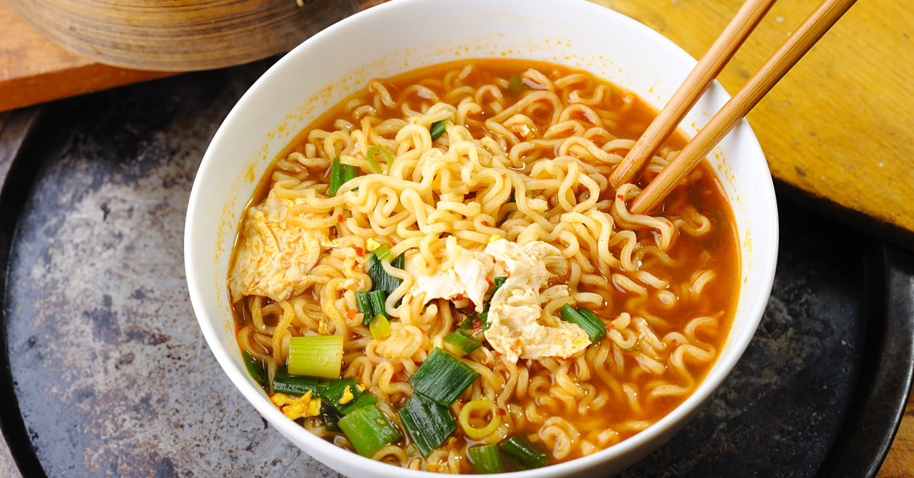

Ramen Noodles

Flavor of Japan
Ramen is a Japanese noodle dish. It consists of Chinese-style wheat noodles
served in a broth; common flavors are soy sauce and miso, with typical toppings including
sliced pork (chāshū), nori (dried seaweed), menma (bamboo shoots), and scallions. Ramen has
its roots in Chinese noodle dishes. Nearly every region in Japan has its own variation of ramen,
such as the tonkotsu (pork bone broth) ramen of Kyushu and the miso ramen of Hokkaido.
Ingredients
- 1 block ramen noodles
- 2 cube chicken bouillon
- 2 tsp salt
- 1 tbsp pepper
Directions
- Bring 2 cups of water to boil in a small pot.
- Add ramen to boiling water.
- Boil for 3 minutes, occasionally stirring to separate.
- Transfer pot contents into bowl.
- Drain water so that ramen is in standing water, but not submerged or floating.
- Crumble bouillon cubes into ramen, stirring to mix when top is covered.
- Add salt and pepper in the same manner.
- Wait to cool and enjoy!